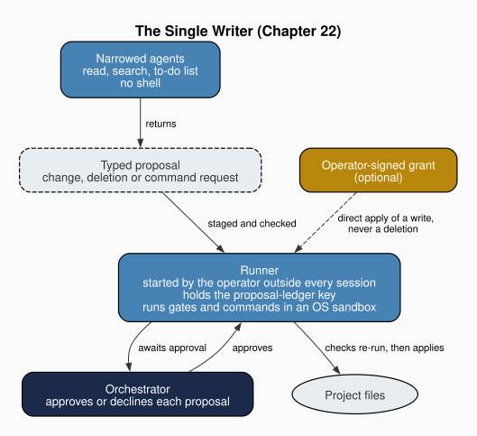

Chapter 22: Enforcement: Where Accountability Becomes Prevention
Part VI: Hardening and Scale
1. The Line Between Accountability and Prevention
Chapter 4 closed its account of the authority hierarchy with a limit. "The constitutional framework enables accountability for scope violations, not prevention of them." The argument rested on the ordinary condition of constitutional constraint as Buchanan and Tullock (1962) describe it. A rule agreed at the constitutional stage binds because a violation can be identified and attributed to someone who answers for it, and a political constitution installs no physical barrier against the acts it prohibits. Much of what followed in Part III depends on that reading. The security agent's HALT yields "accountability rather than impossibility" (Chapter 7), and the conflict auditor exists because an agent that ignores a rule "has broken a rule rather than encountered a barrier" (Chapter 9).
The same chapter also granted an exception without dwelling on it. Agreeing with Vallier's instruction to "align the game" rather than the players (Vallier 2026, 43), it observed that at the level of the team "architectural constraints can enforce the constitutional structure." A tool set is such a constraint. An agent that holds no write tool cannot write, whatever its instructions say. Chapter 4 drew its conclusion about rules in general, while granting prevention to the narrow class of rules that a capability declaration expresses. The question of this chapter is how far that class extends, and why it stops where it does.
Chapter 3 had already supplied the dividing line, in a different setting. Maintenance divides into two operations. "Recognizing that a file has drifted from what its templates now specify is a comparison, and comparisons can be performed by rule." Deciding whether the drift is a defect or a deliberate adaptation "is a judgment about intent, and no rule settles it." The second kind of decision needs what Hayek (1945, 521) called "the knowledge of the particular circumstances of time and place." On my reading, such knowledge cannot be written down in advance, because nobody knows in advance which circumstances will matter. A rule whose application needs that knowledge cannot be checked by another rule. It can only be applied by someone on the spot and reviewed afterwards.
Computer security arrived at the complementary half of the line from the other direction. Saltzer and Schroeder (1975) wrote as designers of time-shared systems, in which many users' programs ran on one machine and the question was what made protection hold in practice rather than on paper. Their survey distilled the experience into a short set of design principles. The most demanding is complete mediation, which requires that every access to every object be checked for authority. Two others matter here as well. Fail-safe defaults base access on permission, so that a mistake denies rather than grants. Least privilege gives each program only what its job requires. None of these principles asks the program to restrain itself. Each places the check in the mechanism that executes the access.
Putting the two traditions together gives the criterion I use throughout this chapter. A constitutional prohibition moves from accountability to prevention when two conditions hold. It can be stated as a path, a tool, a system call or a writer, and the runtime that executes the agent checks it before the act. The first condition is the comparison by rule, and the second is Saltzer and Schroeder's mediation. Where a prohibition needs judgment, or where the runtime treats the declaration as advice, accountability remains the ordinary condition. The format rule that keeps content flowing in one direction between file types, which Chapter 15 notes is "not enforced by technical lock," stays on that side, because no runtime reads it. So does every rule about whether an argument is sound or a source is fit for purpose.
The criterion also explains why prevention in this chapter always comes with a list of places. The same rule, stated the same way, may be checked by one provider's runtime and ignored by another's. The framework records each surface as enforced, declared or without a channel for the rule at all, and I call a rule cooperative where it binds only if the agent chooses to follow it. Every claim of prevention below names its surfaces or points to the summary of them in §7.
2. Declared Limits and the Gap Between Declaration and Effect
Butler Lampson (1973) wrote a three-page note on what it would take to keep a program one calls, but does not trust, from passing on what it can read. His answer was sobering. A program can leak through any channel the system leaves open, including channels nobody designed for carrying information, and so confinement holds only when every channel has been identified and closed. The note's lasting contribution is less a mechanism than a discipline of suspicion toward one's own description of a system. What the designer says the program can do is a hypothesis about the system, and the system decides whether it is true. Lampson's customer lends data to a service program it cannot inspect. The principal of an agent team stands in a similar position toward the runtime, a closed program whose reading of an agent file can be learned only by testing it.
An agent's declared limits are hypotheses of the same kind. Miller and Drexler (1988c) held that privileges must be endowed through clearly defined interfaces, a principle Chapter 3 adopted for the agent team. The interface that endows a privilege, though, is the runtime's reading of the agent file, not the author's intention in writing it. A declared limit is a claim about what a runtime will do, and enforcement begins with checking that claim against the runtime's own reading of the file.
The framework learned this from its own emitter. Claude agents were generated with their limits declared under the allowed-tools key. Claude Code reads that key for slash commands, and the framework's own record states that it "is ignored in a subagent file, which silently granted every generated agent the full tool pool." Every agent that its file described as read-only could write. The framework now emits the tools: key, which is the one Claude's subagent schema reads. Before the fix, Chapter 7's sentence "The security agent has no write capabilities" was true of the file and false of the agent. It is true now on the surfaces that enforce the grant.
The second failure came from a practice Chapter 14 describes and endorses, on the ground that reversibility is the cheaper purchase wherever it is available. Any operation rewriting a team's files "takes a timestamped copy of the prior state" beforehand. Those copies were kept inside the agents directory. Claude Code (by the framework's measurement) and Codex (by its agent-discovery code) load agent files from that directory recursively, and Claude Code reads hidden subdirectories too, so a copy was read as an agent. "A backed-up pre-switch primary-producer.md shadowed the narrowed one and kept Write, defeating the write policy." The write policy in that record is the write-policy switch (§5), and the copy defeated it by preserving exactly the grant the switch had withdrawn. The runtime had no way to know which file the operator meant.
The repair keeps the backups and changes where they can be read. They are now stored under a suffix that no runtime loads as an agent, mapped back to their names on restore, and older copies are neutralized. Chapter 14's argument for reversibility stands. What changes is the condition attached to it. I would advise anyone who keeps copies of agent files by hand to keep them outside the directories a runtime scans, because a copy that a runtime can load is another agent.
Both failures are instances of the drift Chapter 21 describes, a declared state that diverges from the actual one, appearing at the enforcement layer. In each case the rule was sound and the reading that gave it effect was not. The framework's answer is a family of checks that compare declaration with effect.
- A test fails when an agent's charter promises work its tools cannot do, such as external retrieval without a retrieval tool.
- After every emit, a scanner reports any deployed grant that "GRANTS MORE than the template." It is advisory in an ordinary run and blocking in a fleet run.
- Each agent's grants are checked against its rank in the hierarchy. Surfaces where the check cannot be made (Codex, Goose and agents-md) report that they are not checkable, which is a fail-safe default applied to reporting. A check that passed where it could not look would repeat the original error at one remove.
- When a team is projected onto another provider, the projection is re-read the way that provider reads it and refused if any agent's grant widens, with no exception. On the direct projection path a second check refuses an agent whose grant is narrower than the surface's default on a surface that only declares grants or has no channel for them. The operator can name such an agent as an exception, and that agent's grant is then recorded as cooperative.
The last of these checks generalizes the lesson of the first failure. Prevention needs a check that reads each file as its runtime does. Once a limit has been read correctly, something still has to act on it at the moment of the act.
3. The Gate at the Point of Action
North (1990b) counted the enforcement characteristics of rules as part of the institution itself. A rule whose enforcement is left to the goodwill of the regulated is a different institution from the same rule backed by a court. Chapter 4 reached the same point for the team when it said that "constitutional enforcement at the level of the team is primarily architectural." Complete mediation tells us where that architecture has to sit. A check that runs after the act is an audit, and only a check that runs before it can prevent anything.
The framework's pre-action gate is a hook that the Claude harness runs before each matching tool call. Its own header explains why it exists. The framework already had a fail-closed gate, but it guarded entry points of the command-line tool and not the agents, so an agent deleting files with a shell command never reached it. For agent-initiated actions, the header records, the clearance rule "was procedural text." The hook moves the check into the harness, where it "is not merely another file the agents can edit on their way past it." The gate ships with every generated Claude team. On Codex a role check takes its place under the single writer, a separate hook that restricts what each spawned agent may call and scans no content, and on Grok a pinned shim runs the unmodified gate as advice and fails open.
The gate's verdicts follow the line drawn in §1. It denies deterministic findings, which are content the scanner rates high severity about to be written: credentials, personal-data (PII) paths, injected override text. "There is no legitimate reason to write those," the header says, so a block costs nothing. It asks about procedural findings, which are shell commands that match a mandatory review trigger. "Whether sudo or a pipe-to-shell is appropriate is a judgment call the constitution routes to a human." The split is Chapter 3's distinction between comparison and judgment, written into a verdict policy, and the header gives the reason a designer should accept it. A hook that denied procedural cases outright "would be wrong often enough to get removed." Prevention by rule invites false positives, and a boundary that misfires is soon taken down. The ask verdict keeps the judgment with the principal, which is where Hayek's argument says it belongs.
The mediation is also incomplete, and the framework says so. On Claude the hook sees five tools: Write, Edit, NotebookEdit, MultiEdit and Bash. Read, WebFetch, sub-agent dispatch and MCP tools never reach it, and those are the calls through which injected content enters a session. Bash findings go to ask rather than deny. The gate prevents certain writes and puts certain commands to a person. It mediates nothing an agent reads.
A gate can crash, and Saltzer and Schroeder's fail-safe default says a crash should deny. The framework's default is the opposite, and the reasoning deserves a fair hearing. An attacker who can make the hook crash gets an allow, which is a real cost. But "a hook that can brick an operator's session gets deleted, and a deleted hook enforces nothing." For a cooperative workspace the framework accepts the open failure and protects the hook in other ways. For a team that has explicitly chosen a confined or exclusive profile, the gate is emitted to fail closed, because "the operator opted into a boundary, so a gate crash must not drop it." A wiring check confirms that the boundary is in fact in place, and the framework refuses confinement that the host cannot enforce.
The enforcer also has to sit outside the reach of what it enforces. A boundary an agent can edit is advice. An integrity manifest pins the enforcement modules and the gate hook itself. Template digests are kept in a committed file outside the writable package, so the reference against which drift is measured cannot drift with it. Prompt roots are hashed at each render, and the append-only governance logs are validated. Fences that Chapter 21 described as "simultaneously an integrity boundary and a preservation boundary" can now be marked template-authoritative, so that constitutional text takes the template's content even where local edits are otherwise preserved, and a constraint-bearing line deleted from a deployed file is detected whether or not it was fenced.
The switch that requires signed decisions is the clearest case. A governed workspace, in the framework's term, is a team whose decision-signing switch is on, which it is by default from the first render, and once a team is governed a git-tracked marker keeps any later render from turning the switch off. A confined team denies writes to the file that holds it, and a governed workspace fails closed when that file is missing. Elster (1977) read Ulysses at the mast as a model of rational self-binding, an agent who foresees that his later self will want to act and arranges in advance that it cannot. The protected switch is analogous to self-binding of that kind, chosen by the principal before any agent is tempted, with two differences. The principal binds others, the agents of the team, rather than a later self. And unlike Ulysses, the principal can unbind the switch from outside whenever it chooses.
Beside the gate the framework offers an opt-in decision log, hash-chained and free of written content. Its header is careful about what the log is. "The log is evidence, not the boundary." A failure to write the log never changes a decision, and a missing line means no evidence, never a pass. The log belongs to the accountability side, kept next to the mechanism that prevents.
4. Confinement Beneath the Agent
Lampson posed the confinement problem for a program that could not be trusted to describe its own behavior. The gate in §3 still depends on a harness that cooperates with it, and it sees only some tools. Confinement in Lampson's sense moves the boundary below the agent, into the operating system that runs the agent's process, where nothing the agent reads or edits can reach it. His problem included covert channels, the ones a program can signal through without ever writing a file. The framework's boundaries close overt channels only (write paths, read-denied paths, process spawn and network egress), and covert channels are out of scope.
Chapter 7 conceded that a constitutional rule "cannot also make the boundary physically real." An operating-system sandbox is the framework's answer where an operator has wired one. The team brief carries a privilege_profile with three values. A cooperative profile emits no sandbox. A confined profile emits the provider's sandbox and confines writes to the workspace roots the brief declares. An exclusive profile adds a denial of reads on credentials and sibling workspaces. Saltzer and Schroeder's least privilege is the principle, applied to the process instead of to the agent's instructions.
At the anchor (the framework as of the 6 November 2026 main-branch commit named in the front matter), confined is the default profile, but the sandbox block it emits is an example with no effect until the operator merges it into live settings. A generated team therefore carries an inert sandbox until merged.
The framework keeps this deliberately. The one artifact keyed to the profile that would change a live team, the fail-closed gate, flips only on an explicit choice, so that a routine update never changes the behavior of a team that did not ask. The choice follows the reasoning behind the gate's fail-open default. A default that rewrote live settings on its own would break sessions, and broken sessions are how boundaries get removed.
The boundary is specific to each provider. Claude has its native sandbox block, though project settings cannot confine its network egress, because Claude Code honors a strict allowlist only in user or managed settings. On macOS, Goose receives a Seatbelt profile that denies writes outside the workspace, and Goose has no native sandbox on Linux or Windows. On Linux, the framework emits an inert Goose runner over a bubblewrap launcher, with egress denied by default. That launcher is framework-neutral and can wrap any framework's session, and its Linux path has been verified against a live kernel by an escape test, while its macOS path is marked unverified. Codex runs inside the launcher, with a writable per-project home kept outside the repository, because Codex's own sandbox setup fails inside another sandbox. On Codex the launcher is the boundary.
WASM confinement goes one level further. Agent code runs as a guest module with no network and with fuel and memory limits, and a sub-agent receives an attenuated specification. The framework records a verdict for each framework, and only two of its values claim enforcement. They are given only where the operating-system sandbox is on and the control-plane rules are merged in the live configuration. Copilot in VS Code and on the command line, agents-md, Grok under native-exec replacement, Goose delegates and every top-level session are advisory. Native Windows is unsupported, and Grok receives only an inert example. The vendor command-line process itself is never inside the guest. It is confined only by the operating-system sandbox, and only once that boundary is wired.
Because prevention of this kind belongs to the wired system rather than to the generated files, the framework tests it there. Its mechanism tests drive real Seatbelt and bubblewrap, and its product tests launch the real Claude command-line tool against the emitted block. Tests of this kind are slower and more fragile than tests of the emitter, but they are the only ones that answer the operator's question, which is whether a write outside the workspace actually fails. A sandbox that has been described but never exercised is in the same position as the ignored key in §2.
A sandbox also refuses legitimate work, and the question is what happens next. The framework's answer is a handoff script. An agent that cannot do something inside its boundary writes a script that does it, states why it was blocked and what the script will touch, and gives it to the operator. Unless the work is destructive, no further confirmation is asked, because "running the script is the approval." The exception is routed to the principal in the same way the gate routes a procedural finding, and the operator who runs the script is the one who answers for it.
5. The Single Writer
Williamson (1985) asked which governance structure suits which kind of transaction. Markets, hierarchies and the forms between them each economize on different costs, and the attributes of a transaction (how specific the assets, how uncertain the circumstances, how often it recurs) determine which arrangement governs it at least cost. Chapter 13 used his question for the decision to extract content into reference files. It applies with more force to writes. A write to a shared agent file is frequent, its effect on other agents is hard to foresee, and two writes to the same file at once destroy each other's work. The same chapter described the failure that sequencing avoids. If the refactorer and the updater ran concurrently, "both might modify the same agent file, creating a write conflict."
Chapter 14 made a related choice for deletion. "I centralized deletion in a single agent" so that one agent applied the safety gates and no other agent needed them. The single writer carries that choice to every write. Under the switch that sets write_policy to orchestrator-only, every agent except the orchestrator has its tools narrowed to read, search and a to-do list, and loses its shell. Instead of writing, it returns a typed proposal: a change proposal with the file's full new content, a deletion proposal, or a request to run a command. The orchestrator applies the ones it accepts. Miller and Drexler's interface is now literal. A narrowed agent has one channel of influence over the project's files, and it is a document the orchestrator reads.
Deletion moves as a result. Under the single writer the cleanup agent no longer deletes anything. It returns a deletion proposal like every other agent, and the orchestrator applies it, so the single deleter becomes the orchestrator. The cleanup agent's analysis of what is safe to remove becomes the content of its proposal, and the act passes to the agent that applies every other write. The repository liaison, which Chapter 16 §7 makes "the single point through which boundary interactions are made visible and reviewable," loses the write access to adjacent repositories that chapter gives it, along with every other agent's write access.
The orchestrator decides, but it does not act alone. An operator starts a runner outside every agent session, and the runner alone holds the key to the proposal ledger, applies queued artifacts and runs requested commands inside an operating-system sandbox. The orchestrator is not trusted with the key either, and its session never holds it.
Agents with a grant to the runner's MCP server submit writes through it, and by default those writes are staged. The runner checks them and stores them, and the orchestrator approves each one, at which point the checks are run again against the file as it is now. An operator-signed grant can let the runner apply an agent's write directly, though never a deletion. That relaxes a constraint, since it removes the orchestrator's look at each write, so it is honored only when the operator's signature verifies, and the runner remains the single decision point. Whether an agent needs such a grant at all is decided from the runner's ledger, not from the agent's own account of its needs.

Where sequencing makes conflicting writes unlikely, a single writer makes them impossible for rendered agents, on the surfaces that check the switch. There is one stated residual. Claude Code ships a built-in general-purpose subagent that the framework does not render, so neither the framework's audit nor a permission rule can narrow it. Dispatched under the switch, it keeps Bash, and with Bash the orchestrator's channel to the runner. The framework's only mitigation is procedural (dispatch team agents alone), which places that one path back on the accountability side.
The single writer is a governance structure a team chooses, and most teams cannot choose it. The framework refuses the switch on Goose, whose delegates inherit the orchestrator's extensions, and on Copilot, agents-md, Grok and every framework other than Claude and Codex. On Codex, which drops a custom agent's sandbox setting, a pinned role gate holds the switch, and without it per-role limits on Codex are "INSTRUCTION-LEVEL only." It requires an explicit confined or exclusive profile, since the default would leave the Claude gate failing open. It refuses Claude under the switch on Linux, where the runner's status channel has not been measured under bubblewrap. Turning it off again is not a clean rollback, because fenced instructions and runner state are left behind for the operator to remove.
The costs are of a familiar kind. Every write now waits on one agent, and a failure in the orchestrator stops all of them. Chapter 5 already accepted the orchestrator as "a designed bottleneck intended to maintain order" for coordination, and the single writer extends the same trade to authority over files. Williamson's question is the right one to ask before adopting it. A team whose agents rarely touch the same files gains little from a single writer and pays its throughput cost in full. A team whose agents rewrite each other's specifications, as the pipeline teams of Part V do, has the transaction for which the arrangement was designed.
At the time of writing, the team that maintains this book runs on Copilot, and the framework would refuse the switch for it. Its writes are still governed the way the earlier chapters describe, by sequencing and by a single deleter, and the conflicts that sequencing avoids remain avoided rather than impossible.
6. Measuring What Judgment Cannot Guarantee
On the reading Chapter 4 gave of Buchanan and Tullock (1962), constitutional rules bind because violations can be identified and attributed, so accountability presupposes detection. Vallier (2021) adds that trust in a system of rules rests on evidence that the rules hold. Rules that need judgment cannot be moved across the line, so the framework's answer for them is measurement. An instrument cannot make an agent's judgment hold, but it can show how often it does.
The framework runs a standing red-team audit, with a phase that audits the audit, on a schedule. Beside it sits a judgment layer aimed at a gap the deterministic scanner cannot cover, which is a payload that never uses a trigger phrase and still asks an agent to act against its constitution. Until a script drove that corpus through a live agent, the framework's own record says, the judgment layer was "an accepted risk rather than a measured one." The corpus contains attacks and benign controls. It is run against agents with the security contract present (the contract arm) and with it removed (the ablated arm), and a cross-model harness runs the same corpus across several models. The quantity of interest is capitulation, by which I mean a reply in which the model adopts the attack's premise and acts on it. The framework also tags attacks against the ATLAS and OWASP taxonomies, measures how often the enforcement layer catches what it should, and reports confidence intervals. Its attack-generation harnesses carry their own rails: a host allowlist, quarantine of generated payloads outside the tracked corpus, and budget limits.
The comparison between arms is the part of the design I find most useful to anyone building a team. It holds the model and the payload fixed and asks what the contract adds, which is the question an operator faces when deciding whether constitutional text earns the context it occupies. A team that never removes its contract cannot tell whether its agents refuse an attack because of the constitution or would have refused it anyway. The benign controls guard the other flank. A contract that made an agent refuse everything would score perfectly against attacks and be useless for work.
The instrument's design records its own near-failure. For one authority-rejection probe the automated scorer "cannot reliably tell a denial from an approval." The verdict for that probe is therefore read by a person and frozen as a lookup table, with each model's evidence quoted beside it. Freezing the verdict trades live judgment for repeatability, since the score becomes a deterministic lookup and nothing is invoked when it is computed. A second-model check measures how often an automated judge agrees with that frozen human-read verdict, at κ≈0.91, according to the framework's red-team reference page. The figure is a reliability check on one probe's verdict. It is neither the production scorer nor a capitulation rate. The cross-model harness also keeps a liveness floor, which caught a run that reported every attack defended in no measurable time. A run that cannot have reached a model had passed every test.
An instrument can report success because it cannot see failure. A scorer that reads every reply as a refusal and a harness that records a defense where no model replied produce the same report as a team whose agents hold. The framework has applied to its measurements the suspicion §2 applied to declarations.
This chapter describes the instrument and not its findings, because the framework at the anchor holds no dated note of results. The instrument measures judgment. It does not prevent anything.
7. Where Prevention Stops
Vallier's ecosystem argument still applies after everything in this chapter has been built. Under competitive selection, lineages of agents that spend effort on alignment lose ground to lineages that do not, and that selection operates across lineages of teams, where no single team's architecture reaches (Vallier 2026). Within the team, prevention is real but partial, and it exists only where someone has chosen it. It covers rules that can be stated, on surfaces that check them, in teams whose operator has wired the boundary. Everything else is still governed by detection and attribution.
The surfaces differ by mechanism, and the table gathers them.
| Mechanism | Enforced on | Cooperative, advisory or refused on |
|---|---|---|
| Tool grants | Claude, and Copilot in VS Code and on the command line. Goose only on a direct recipe run | Goose delegates, which inherit the orchestrator's extensions. Codex outside its role gate (self-imposed), Grok (declared only) and agents-md (no grant channel) |
| Pre-action gate | Claude, where the hook sees five tools (Write, Edit, NotebookEdit, MultiEdit and Bash) and sends Bash findings to ask | Grok, through a pinned shim that fails open. On Codex under the single writer a separate role gate restricts each spawned agent by role and scans no content |
| Operating-system confinement | Claude's native sandbox, Goose's Seatbelt profile and Linux runner, the neutral launcher (verified on Linux, unverified on macOS) and Codex under that launcher, in each case only once merged or wired | Every emitted sandbox block until it is merged. Network egress on Claude from project settings |
| WASM confinement | Only where the operating-system sandbox is on and its rules are merged | Copilot, agents-md, Grok under native-exec replacement, Goose delegates, every top-level session and every vendor command-line process |
| Single writer | Rendered agents on Claude on macOS with an explicit confined or exclusive profile, and on Codex through its launcher | Refused on every other surface. Claude Code's built-in general-purpose subagent stays outside it |
Every one of these switches is either opt-in or inert until wired. Prevention in this book therefore always means prevention on these surfaces, once wired. The chapters that follow use three words for a boundary in the sense fixed here (enforced, cooperative and inert until wired). The framework's advisory and declared-only verdicts, in this chapter and its table, are kinds of cooperative, and a refused switch is one the framework will not render on a surface, which leaves no boundary there to name. A reader who meets the word prevention in them should hear that qualification attached to it. I would add one practical recommendation. An operator who adopts a boundary should run the framework's wiring check after every change of settings, because a boundary that was never merged looks the same in the team's files as one that was.
What remains with accountability is substantial. Every rule that needs judgment stays there on every surface. So does every statable rule on a surface that treats it as advice, and so does the residual path through the built-in subagent. The knowledge of particular circumstances that Hayek placed with the person on the spot remains with the agent and the principal, and the most a runtime can do with such a rule is ask. Since this chapter extends Chapter 4's account of accountability rather than reversing it, Buchanan and Tullock's condition still describes most of what a constitution does for an agent team. The new boundary marks off the rules for which a runtime can now do more.
A boundary that can never be relaxed is removed the first time it blocks work the principal wants done, so who may relax one is Chapter 23's question. The chapters after it carry the confinement, the runner and the grant to fleets and to remediation, and the synthesis in Chapter 26 sets all of it in the book's larger argument.